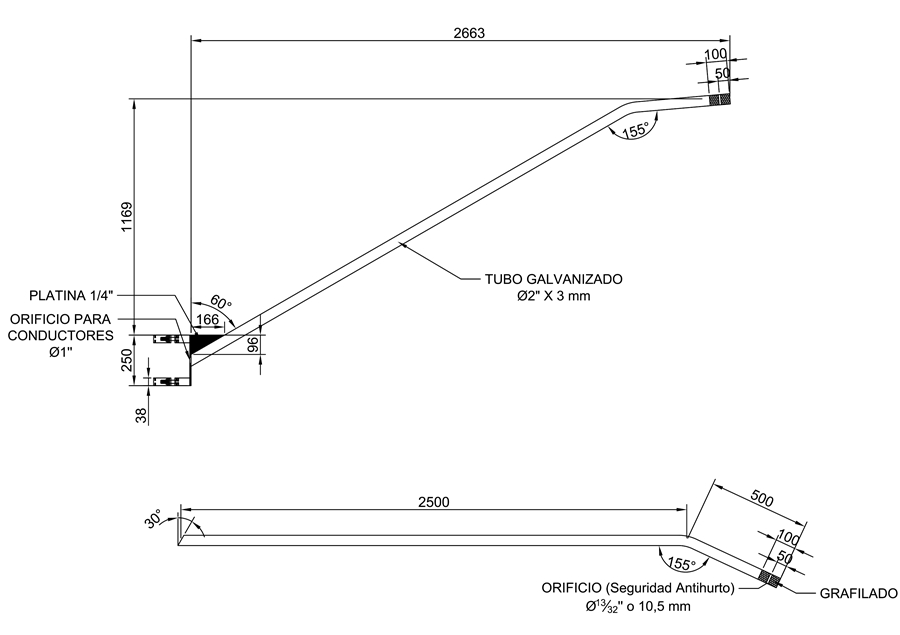
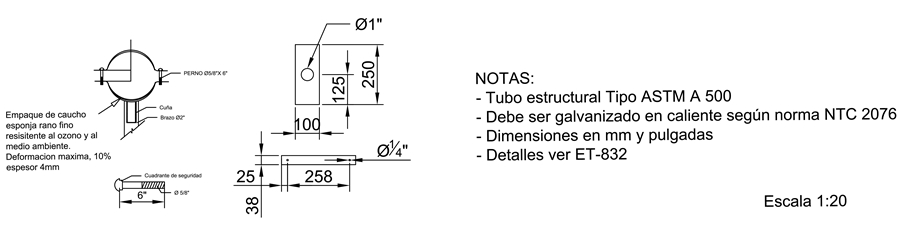
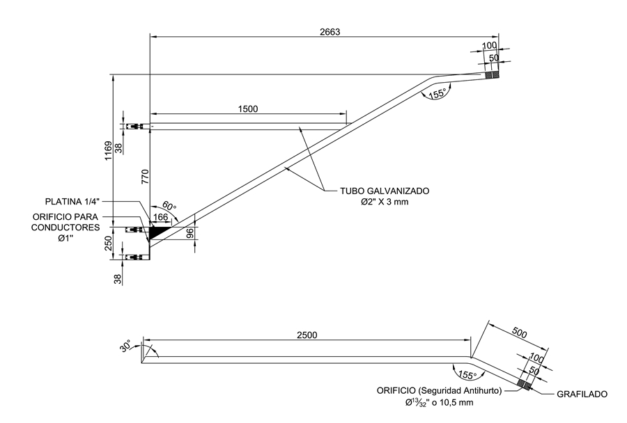
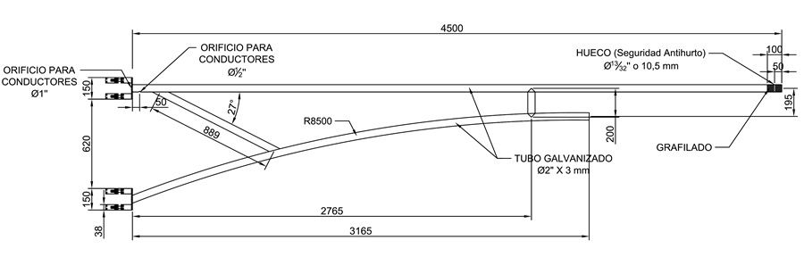
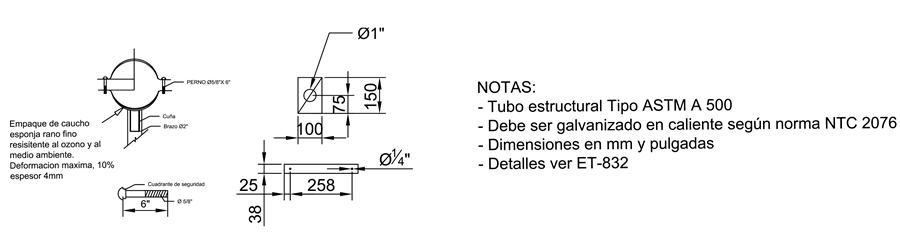
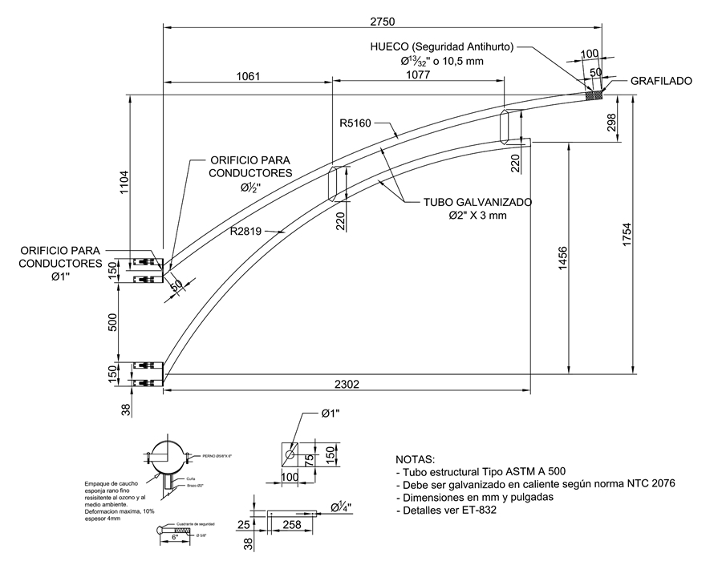
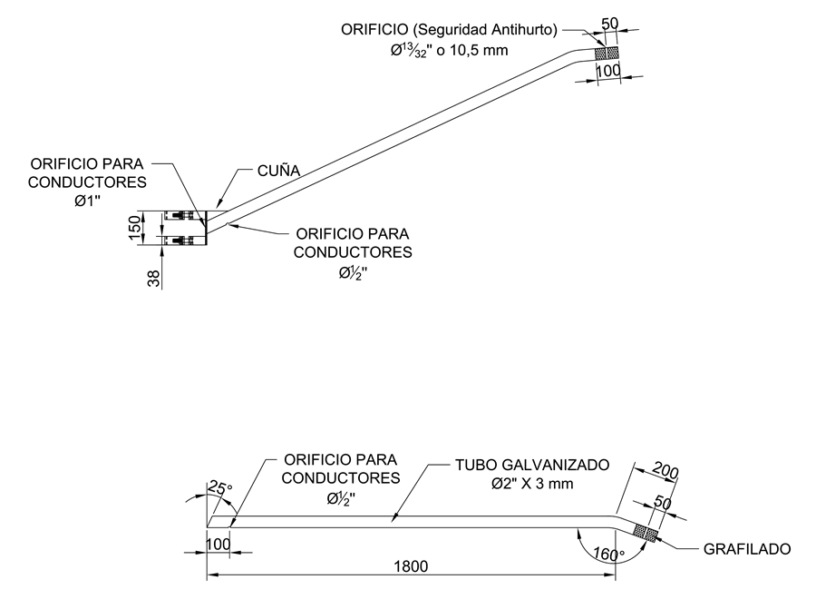
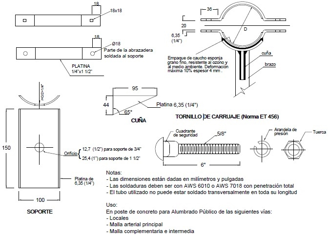

Siempre es más fácil conocer las normas ENEL-CODENSA
Rolex Rolex gold watch, compared with ordinary materials, gold watches are often expensive, but the replica rolex gold watch has the role of swiss replica watches hedging, so that it often becomes the first choice for collectors. The gold watch has value in the world, largely because the omega replica watch brand launched a commemorative limited edition watch or a replica hublot complex movement process or artistic attainments deep watches, mostly preferred gold precious metals such material. These watches tend to have a strong hedging function, therefore, Rolex Rolex gold watch reputation.

ET832 Soportes para luminaria horizontal en postes de concreto
Datos adicionales
Número de especificación
ET 832
Fecha de vigencia
14/12/2023
Herramientas adicionales
- Contenido Ocultar
- 1. OBJETO
- 2. ALCANCE
- 3. CONDICIONES DE SERVICIO
- 4. SISTEMA DE UNIDADES
- 5. NORMAS DE FABRICACIÓN Y PRUEBAS
- 6. REQUERIMIENTOS TÉCNICOS PARTICULARES
- 6.1 Características Generales
- 6.2 Geométricos
- 6.3 Químicos
- 6.4 Mecánicos
- 6.5 Requisitos del recubrimiento
- 6.6 Requisitos del Acabado
- 6.7 Tolerancias en la Fabricación
- 7. CRITERIOS DE ACEPTACIÓN O RECHAZO
- 7.1 Muestreo
- 7.2 Aceptación o Rechazo
- 8. PRUEBAS
- 8.1 Prueba Dimensional
- 8.2 Análisis Químico
- 8.3 Prueba del Galvanizado
- 8.4 Otros ensayos
- 9. MARCACIÓN Y EMPAQUE
- 9.1 Marcación
- 9.2 Empaque
- 10. GARANTÍA DE FÁBRICA
- 11. INSPECCIÓN EN FÁBRICA
- 12. SISTEMA DE CALIDAD
- 13. PRESENTACIÓN DE LAS OFERTAS
1. OBJETO
Establecer las condiciones que deben satisfacer los soportes horizontales para luminarias de vías de la malla arterial principal y arterial complementaria, vial intermedia y vial local, los cuales deben poseer excelentes características técnicas de desempeño, durabilidad y calidad, cumpliendo con la condición de apoyo de las luminarias y distribución del flujo luminoso.2. ALCANCE
La presente especificación se aplicará en todas las estructuras donde se instalen luminarias horizontales en postes de concreto convencionales, que adquiera CODENSA S.A. ESP para el sistema de Alumbrado Público.Los soportes son de los siguientes tipos:
- Soporte sencillo con abrazaderas de 1 500 mm
- Soporte sencillo corto con abrazaderas de 500 mm
- Soporte doble con abrazadera de 1 500 mm
- Soporte sencillo de 2 000 mm
- Soporte largo con abrazadera de 2 800 mm
- Soporte para fijación en percha porta aislador de BT de 1 080 mm
- Soporte extendido de 3000 mm
- Soporte extendido con abrazaderas de 3000 mm
- Soporte sencillo de 1500 mm
- Soporte extendido para luminaria horizontal con abrazadera (Alternativa 3 – 2 663mm)
- Soporte extendido doble tubo para luminaria horizontal con abrazadera (Alternativa 4 – 2 663mm)
- Soporte extendido doble tubo para luminaria horizontal con abrazadera (Alternativa 1 - 4 500mm)
- Soporte extendido doble tubo para luminaria horizontal con abrazadera (Alternativa 2 - 2 750 mm)
- Soporte sencillo con abrazaderas de 2 000 mm
- Abrazadera para proyector
3. CONDICIONES DE SERVICIO
Los soportes para luminarias horizontales serán utilizados bajo las siguientes condiciones:| CARACTERÍSTICAS AMBIENTALES | |
| a. Altura sobre el nivel del mar | 2 640 m |
| b. Ambiente | Tropical |
| c. Humedad | Mayor al 90 % |
| d. Temperatura máxima y mínima | 45 ºC y - 5 ºC respectivamente. |
| e. Temperatura promedio | 14 ºC. |
| f. Instalación | A la intemperie |
| CARACTERÍSTICAS ELÉCTRICAS | |
| a. Tensión Nominal del sistema | |
| Línea - Línea | 208, 240 V |
| Línea – Neutro | 220, 277 V |
| b. Frecuencia del sistema | 60 Hz |
4. SISTEMA DE UNIDADES
Todos los documentos técnicos, deben expresar las cantidades numéricas en unidades del sistema Internacional (S.I.). Si se usan catálogos, folletos o planos, en sistemas diferentes de unidades, deben hacerse las conversiones respectivas.5. NORMAS DE FABRICACIÓN Y PRUEBAS
| NORMA | DESCRIPCIÓN | |
| ASTM | A385 | Standard practice for providing high quality zinc coatings (hot dip) |
| ASTM | A563 | Standard Specification for carbon and alloy steel nuts. |
| ET | 457 | Especificación Técnica CODENSA S.A. - Tornillo |
| ET | 462 | Especificación Técnica CODENSA S.A. – Arandela |
| ET | 463 | Especificación Técnica CODENSA S.A. – Tuerca hexagonal |
| NTC | 1 | Ensayo de doblamiento para productos metálicos. |
| NTC | 2 | Ensayo de tracción para productos de acero. |
| NTC | 23 | Determinación gravimétrica de carbono por combustión directa, en aceros al carbono. |
| NTC | 24 | Determinación del manganeso en aceros al carbono. Método del persulfato. |
| NTC | 25 | Determinación del manganeso en aceros al carbono. |
| NTC | 26 | Determinación del silicio en aceros al carbón. |
| NTC | 27 | Determinación de azufre en aceros al carbono. Método de evolución. |
| NTC | 28 | Determinación del silicio en aceros al carbono. Método del ácido sulfúrico. |
| NTC | 180 | Método gasométrico para determinación de carbono por combustión directa en hierros y aceros al carbono. |
| NTC | 181 | Aceros al carbono y fundiciones de hierro. Método alcalimétrico para determinación de fósforo. |
| NTC | 402 | Segunda revisión. Metalurgia. Perfiles de acero laminados en caliente. Ángulos de alas iguales y ángulos de alas desiguales. Tolerancias en dimensiones y en masa. |
| NTC | 422 | Perfiles livianos y barras de acero al carbono acabadas en frío. |
| NTC | 858 | Pernos y Tuercas |
| NTC | 1000 | Sistema Internacional de Unidades. |
| NTC | 1645 | Pernos y tuercas |
| NTC | 1920 | Metalurgia. Acero estructural. |
| NTC | 1985 | Siderúrgica. Acero de calidad estructural, de alta resistencia y baja aleación, al columbo vanadio. |
| NTC | 2076 | Electricidad. Galvanizado por inmersión en caliente para herrajes y perfiles estructurales de hierro y acero. |
| NTC | 2663 | Electrotecnia. Abrazaderas o collarines. |
| NTC | 3241 | Siderurgia. Determinación del espesor más delgado del recubrimiento de zinc. (galvanizado) en artículos de hierro y acero por inmersión de sulfato de cobre (método preece). |
| NTC | 3320 | Siderurgia. Recubrimiento de zinc. (galvanizado) por inmersión en caliente en productos de hierro y acero. |
| NTC | 1097 | Control estadístico de calidad, inspección por atributo, planeo de muestra única, doble y múltiple. |
| NTC-ISO | 2859-1 | "Procedimientos de muestreo para inspección por atributos. Parte 1 : Planes de muestreo determinados por el nivel aceptable de calidad para inspección lote a lote". |
| SAE | 1008 | Tipos de acero |
| 1010 | ||
| 1015 | ||
Las normas citadas en la presente especificación (o cualquier otra que llegare a ser aceptada por CODENSA S.A.) se refieren a su última revisión.
6. REQUERIMIENTOS TÉCNICOS PARTICULARES
6.1 Características Generales
Los soportes para luminarias horizontales, se construirán en tubería circular cumpliendo con las siguientes condiciones:- Todos los materiales deben ser de alta calidad y cumplir la norma NTC – 422; el acero debe ser de bajo silicio o sea menor de 0,05% (A34 - SAE1010).
- Permitir la instalación y la fijación de un tornillo antihurto mediante una perforación de 13/32” (o 10.5 mm), ubicada a 50 mm (+0, -2 mm) desde el borde, al punto central del orificio.
Dicha perforación deberá permitir la el acceso de los siguientes sistemas:
- Tornillo pasante de 3/8”x 80mm y tuerca cónica de cabeza fusible removible (galvanizados en caliente y con rosca estándar).
- Varilla redonda 3/8” con grafilado en la punta de 20mm .
6.2 Geométricos
Los diámetros utilizados para cada uno de los soportes de luminarias horizontales serán los siguientes:| LONGITUD DEL SOPORTE | TIPO DE SOPORTE | DIAMETRO | POTENCIA DE LA LUMINARIA | APLICACIÓN |
| NOMINAL | ||||
| 500 mm (Ver figura 3) | Sencillo con abrazadera | ¾ “ o 1 ½ “ | 70 W | Vía local, malla arterial principal, complementaria e intermedia |
| 2” (Luminaria LED) | --- | |||
| 1 500 mm (Ver figura 1) | Sencillo con abrazadera | ¾ “ | 70 W | |
| 1 500 mm (Ver figuras 1 y 2) | Sencillo o doble con abrazadera | 1 ½ “ | 150, 250, 400 y 600 W | |
| 1 500 mm (Ver figuras 1A y 2A) | Sencillo o doble con abrazadera | 2” (Luminaria LED) | --- | |
| 2 000 mm (Ver figura 4) | Sencillo con abrazadera | ¾ “ | 70 W | |
| 2 000 mm (Ver figura 4) | Sencillo con abrazadera | 1 ½ “ | 150, 250, 400 y 600 W | |
| 2” (Luminaria LED) | --- | |||
| 2 800 mm (Ver figura 5) | Sencillo con abrazadera | 1 ½” | 150, 250 y 400 W | |
| 2” (Luminaria LED) | --- | |||
| 1 080 mm (Ver figura 6) | Sencillo para fijación en percha porta aislador de BT | ¾ “ | 70 W | |
| 2” (Luminaria LED) | --- | |||
| 3 000 mm (Ver figura 7) | Sencillo para fijación en percha porta aislador de BT | 1 ½ “ | 70, 150, 250 W | |
| 2” (Luminaria LED) | --- | |||
| 3 000 mm (Ver figura 8) | Sencillo con abrazadera | 1 ½ “ | 70, 150, 250 W | |
| 2” (Luminaria LED) | --- | |||
| 1 500 mm (Ver figura 9) | Sencillo para fijación en percha porta aislador de BT | ¾” | 70 W | |
| 2” (Luminaria LED) | --- | |||
| 2 663 mm (Ver figura 14) | Extendido con abrazadera | 2” (Luminaria LED) | 150, 250, 400 y 600 W | |
| 2 663 mm (Ver figura 14 A) | Extendido doble tubo con abrazadera | 2” (Luminaria LED) | 150, 250, 400 y 600 W | |
| 4 500 mm (Ver figura 15) | Extendido doble tubo | 2” (Luminaria LED) | 150, 250, 400 y 600 W | |
| 2 750 mm (Ver figura 16) | Extendido doble tubo | 2” (Luminaria LED) | 150, 250, 400 y 600 W | |
| 2 000 mm (Ver figura 17) | Sencillo con abrazadera | 2" (Luminaria LED) | 150, 250, 400 y 600 W | |
| 0 mm (Ver figura 18) | Longitud cero con abrazadera | Sin diámetro nominal | 30 W a 300W | Proyectores |
El espesor del tubo debe seguir lo indicado por la norma ASTM A500 grado A o B.
6.3 Químicos
La tubería deberá ser del tipo estructural ASTM A 500 grado A B o C, cumpliendo con los siguientes requisitos:| REQUISITOS QUÍMICOS - SOPORTE | ||
| ELEMENTO | COMPOSICIÓN MÁXIMA ASTM A500 | |
| Carbono | 0,27% | |
| Manganeso | 1,40% | |
| Fósforo | 0,05% | |
| Azufre | 0,05% | |
| REQUISITOS QUÍMICOS - ACCESORIOS (TUERCAS Y ARANDELAS) | ||
| ELEMENTO | MÁXIMA | |
| Carbono | 0,28 | |
| Fósforo | 0,048 | |
| Azufre | 0,058 | |
| Manganeso | - | |
| COMPOSICIÓN QUÍMICA DEL CINC ( % ) | ||||
| GRADO | Plomo Máximo | Hierro Máximo | Cadmio máximo | Cinc Mínimo |
| Especial | 0,03 | 0,02 | 0,02 | 99,9 |
6.4 Mecánicos
Los soportes para luminarias horizontales, deben tener mínimo los siguientes requisitos:| PROPIEDADES MECÁNICAS DEL ACERO | |||
| ITEM | TUBO REDONDO ASTM A500 | ||
| GRADO A | GRADO B | GRADO C | |
| Esfuerzo de fluencia | 33 000 PSI | 42 000 PSI | 46 000 PSI |
| Esfuerzo de ruptura | 45 000 PSI | 58 000 PSI | 62 000 PSI |
| Porcentaje de elongación | 25% | 23% | 21% |
6.5 Requisitos del recubrimiento
Los soportes para luminarias horizontales, serán totalmente galvanizados por inmersión en caliente y deberán cumplir con las especificaciones técnicas de la norma NTC 2076 y deben estar libres de burbujas, áreas sin revestimiento, depósitos de escoria, manchas negras y cualquier otro tipo de inclusiones o imperfecciones.Los soportes y abrazaderas se galvanizan con clase B-2 y según Norma NTC 2076.
| REQUISITOS MÍNIMOS DEL GALVANIZADO | ||||
| ELEMENTO | PROMEDIO | MÍNIMO | ||
| gr/m2 | µmm | gr/m2 | µmm | |
| Soporte y abrazadera | 458 | 65,4 | 381 | 54,4 |
6.6 Requisitos del Acabado
Los tubos deben ser de una sola pieza, libres de soldaduras transversales, libres de deformaciones, fisura, aristas cortantes, y defectos de laminación. No se permiten dobleces ni rebajas en las zonas de corte, perforadas o punzadas. El galvanizado debe estar libre de burbujas, depósitos de escorias, manchas negras, excoriaciones y/u otro tipo de inclusiones.El tubo debe estar grafilado en la punta, una longitud de 100mm. El grafilado corresponde a unas estrías realizadas en la superficie del tubo para aumentar la adherencia. La forma (paralela, cruz o cruz diagonal), ángulo y método de ejecución del grafilado, los determinara cada proveedor. El paso del grafilado debe ser 1,2.
6.7 Tolerancias en la Fabricación
CODENSA S.A. aceptará las siguientes tolerancias en la fabricación de la tubería para los soportes:| TOLERANCIAS | |
| ITEM | VALOR MÁXIMO |
| Sobre la longitud | + 2 cm , - 0,5 cm |
| Sobre el diámetro exterior y las dimensiones exteriores | ± 0,006 pulg |
| Sobre el espesor | ± 10% |
7. CRITERIOS DE ACEPTACIÓN O RECHAZO
Para este caso se considerará que existe un lote cuando:- Los materiales de producción pertenecen a un mismo lote de materia prima.
- Las cajas de producción se construyen en diferentes lotes.
7.1 Muestreo
El muestreo se realizará con base en los procedimientos y tablas estipuladas en la norma NTC-ISO 2859-1 “Procedimientos de muestreo para Inspección por Atributos. Parte 1: Planes de muestreo determinados por el nivel aceptable de calidad para inspección lote a lote” (Militar Standard 105 D "Sampling procedures and tables for inspection by atributes") y se acordará por las partes, previamente a la fecha de la realización de las pruebas y recepción de los bienes.Para el desarrollo de las pruebas es indispensable que los instrumentos involucrados estén calibrados.
7.2 Aceptación o Rechazo
Si el número de elementos defectuosos es menor o igual al correspondiente número de defectuosos (dado en la norma NTC-ISO 2859-1 en la tercera columna de las Tablas 1 y 2), se deberá considerar que el lote cumple con los requisitos técnicos exigidos por CODENSA S.A., pero en caso contrario, el lote se rechazará.TABLA 1.
PLAN DE MUESTREO PARA INSPECCIÓN VISUAL Y DIMENSIONAL (NIVEL DE INSPECCIÓN II, NAC = 2,5%) (NORMA NTC-ISO 2859-1 TABLA 1 - TABLA 2A)
| TAMAÑO DEL LOTE | TAMAÑO DE LA MUESTRA | NÚMERO PERMITIDO DE DEFECTUOSOS | NÚMERO DEFECTUOSOS PARA RECHAZO |
| 2 a 8 | A = 2 | 0 | 1 |
| 9 a 15 | B = 3 | 0 | 1 |
| 16 a 25 | C = 5 | 0 | 1 |
| 26 a 50 | D = 8 | 1 | 2 |
| 51 a 90 | E = 13 | 1 | 2 |
| 91 a 150 | F = 20 | 1 | 2 |
| 151 a 280 | G = 32 | 2 | 3 |
| 281 a 500 | H = 50 | 3 | 4 |
| 501 a 1200 | J = 80 | 5 | 6 |
| 1201 a 3200 | K =125 | 7 | 8 |
| 3201 a 10000 | L =200 | 10 | 11 |
PLAN DE MUESTREO PARA LOS ENSAYOS MECÁNICOS (NIVEL DE INSPECCIÓN ESPECIAL S-3, NAC = 2,5%)(NORMA NTC-ISO 2859-1 TABLA 1 - TABLA 2A)
| TAMAÑO DEL LOTE | TAMAÑO DE LA MUESTRA | NÚMERO PERMITIDO DE DEFECTUOSOS | NÚMERO DEFECTUOSOS PARA RECHAZO |
| 2 a 8 | A = 2 | 0 | 1 |
| 9 a 15 | A = 2 | 0 | 1 |
| 16 a 25 | B = 3 | 0 | 1 |
| 26 a 50 | B = 3 | 0 | 1 |
| 51 a 90 | C = 5 | 1 | 2 |
| 91 a 150 | C = 5 | 1 | 2 |
| 151 a 280 | D = 8 | 1 | 2 |
| 281 a 500 | D = 8 | 1 | 2 |
| 501 a 1200 | E = 13 | 1 | 2 |
| 1201 a 3200 | E =13 | 1 | 2 |
| 3201 a 10000 | F =20 | 1 | 2 |
Para efectuar cualquier despacho, es requisito indispensable una autorización escrita de CODENSA S.A., la cual será expedida con base en los resultados de las pruebas realizadas en fábrica y/o la aprobación del protocolo de pruebas realizadas por el fabricante a los soportes solicitados.
8. PRUEBAS
8.1 Prueba Dimensional
La verificación de las dimensiones se hará con los instrumentos de medida que den la aproximación requerida (cinta metálica con divisiones de 1mm para longitudes y calibrador para los diámetros y espesores).8.2 Análisis Químico
Se efectuará el análisis químico de acuerdo a lo requerido en el numeral 6.3 y las normas NTC 23 y 180 (carbono), NTC 27 (azufre), NTC 181 (fósforo), NTC 24 o 25 (manganeso), NTC 26 o 28 (silicio) o en su defecto se aceptará un certificado de calidad de los materiales empleados, emitido por un laboratorio reconocido y aprobado por CODENSA S.A. ESP. El análisis químico puede ser realizado en un espectómetro calibrado con los patrones correspondientes.8.3 Prueba del Galvanizado
Esta prueba se hará de acuerdo a la norma NTC 2076. La prueba de espesor de galvanizado se hará con elcómetro debidamente calibrado8.4 Otros ensayos
- Prueba de abocardado: según norma NTC 103
- Prueba de aplastamiento: según norma ASTM A 500
- Prueba de doblez: según norma ASTM A 53 o NTC 105
9. MARCACIÓN Y EMPAQUE
9.1 Marcación
La marcación del soporte debe ser en bajo relieve y deberá incluir la siguiente información:- Nombre del Fabricante
- Palabra BOG-CUN
- Número de orden de compra
9.2 Empaque
Los soportes para luminarias horizontales, se empacarán de tal manera que no sufran durante el transporte, manipuleo y almacenamiento. Los tornillos irán engrasados, con sus tuercas y arandelas instaladas.10. GARANTÍA DE FÁBRICA
CODENSA S.A. ESP requiere como mínimo, un período de garantía de fábrica de cuarenta y ocho (48) meses, a partir de la entrega de los soportes para luminarias horizontales.11. INSPECCIÓN EN FÁBRICA
El proveedor enviará con no menos de quince (15) días calendario de anticipación, a la fecha programada para la realización de las pruebas en fábrica, el formato de protocolos de pruebas y copia de las normas en inglés o castellano utilizadas para tal fin. CODENSA informará por escrito su conformidad con las pruebas requeridas.El Ingeniero responsable de CODENSA podrá inspeccionar en las instalaciones del proveedor o fabricante y de sus subcontratistas el proceso de fabricación y pruebas y solicitar la información y ensayos que a su juicio resulten necesarias para verificar el cumplimiento de los requisitos estipulados en este documento. El proveedor debe brindar plena colaboración al Ingeniero responsable en el cumplimiento de sus funciones.
El valor de las pruebas y ensayos debe incluirse en los precios cotizados en la propuesta. CODENSA se reserva el derecho de descartar las propuestas que no ofrezcan pruebas, o si las ofrecidas son consideradas insuficientes para garantizar la calidad de los soportes.
12. SISTEMA DE CALIDAD
El oferente adjuntara con su propuesta, para el fabricante de los bienes cotizados, el “Certificado de Conformidad de Producto” y el “Sistema de calidad” de acuerdo con cualquier norma NTC-ISO serie 9000 o norma equivalente en el país de origen, expedida por una entidad idónea del mismo país de origen.13. PRESENTACIÓN DE LAS OFERTAS
El oferente deberá presentar su oferta técnica en el siguiente orden:- ANEXO 1: relación de los bienes cotizados.
- ANEXO 2: información del oferente.
- ANEXO 3: planillas de características técnicas garantizadas. la cual deberá ser diligenciada completamente, firmada y sellada por el oferente. También debe entregarse en Excel.
- EXCEPCIONES TÉCNICAS: apartado en el cual se deben relacionar las excepciones de carácter exclusivamente técnico de la oferta, respecto a los bienes solicitados. Si la oferta no presenta excepción, se indicaría expresamente en el mismo “NO HAY EXCEPCIONES”
- PROTOCOLO DE PRUEBAS: relación de los ensayos realizados al soporte o brazo, y a sus accesorios de acuerdo con lo indicado en el apartado 8 de la presente especificación. En tales protocolos se deberán anotar las fechas de fabricación y pruebas del equipo, para permitir la verificación de las características técnicas garantizadas.
- CERTIFICACIONES: certificación del sistema de calidad, y certificación del producto ante el ente competente en Colombia.
- EVIDENCIA TÉCNICA: relación de clientes, evidencia de su capacidad técnica y experiencias relacionadas con los materiales y/o equipos cotizados.
- GARANTÍA: carta de garantía de los bienes cotizados.
- CATÁLOGOS: catálogos originales completos y actualizados del fabricante, que correspondan a los bienes cotizados, en la planilla de características técnicas garantizadas.
- INFORMACIÓN ADICIONAL: información adicional que se considere aporta explicación al diseño del soporte (dibujos, detalles, características de operación, dimensiones y pesos de los materiales ofertados).
CODENSA S.A. podrá descartar ofertas que no cumplan con las anteriores disposiciones, sin expresión de causa ni obligación de compensación.
ANEXO 1. INFORMACIÓN GENERAL DEL PROPONENTE
| DATOS DEL PROPONENTE | |
| NOMBRE DEL PROPONENTE | |
| NOMBRE DEL FABRICANTE | |
| DIRECCIÓN | |
| CIUDAD | |
| PAIS | |
| TELÉFONO | |
| FAX | |
| PERSONA DE CONTACTO | |
| La persona de contacto, es la responsable de la oferta técnica a la cual se acudirá en caso de consulta o aclaración. | |
| CARACTERÍSTICAS TÉCNICAS GARANTIZADAS | |||||
| SOPORTE PARA LUMINARIA EN POSTE DE CONCRETO | |||||
| N° | CARACTERÍSTICA | OFERTADO | |||
| 1 | Fabricante | ||||
| 2 | Normas aplicadas | Fabricación | |||
| Pruebas | |||||
| 3 | Adjunta planos dimensionados (Si/No) | ||||
| 4 | Material de fabricación (Describir) | ||||
| 5 | Dimensiones | Brazo | Espesor | ||
| Diámetro | |||||
| Longitud | |||||
| Ángulos | |||||
| Abrazadera | Espesor | ||||
| Tornillo | Tipo | ||||
| Diámetro | |||||
| Longitud | |||||
| Arandela | |||||
| Tuerca | |||||
| Soporte | Espesor | ||||
| Largo | |||||
| Ancho | |||||
| Diámetro orificio central | |||||
| Radio curvatura | |||||
| Cuña | Espesor | ||||
| Largo | |||||
| Ancho | |||||
| Ángulo de corte | |||||
| 5A | Dimensiones Soportes doble tubo- Apoyo (Figuras 14ª, 15 y 16) | Brazo | Espesor | ||
| Diámetro | |||||
| Longitud | |||||
| Ángulos | |||||
| Abrazadera | Espesor | ||||
| Tornillo Tipo | |||||
| Tornillo Diámetro | |||||
| Tornillo Longitud | |||||
| Arandela | |||||
| Tuerca | |||||
| Soporte-Apoyo | Espesor | ||||
| Largo | |||||
| Ancho | |||||
| Radio curvatura | |||||
| Cuña-Acople entre soportes | Espesor | ||||
| Largo | |||||
| Ancho | |||||
| 6 | Sistema de fijación al poste (Describir) | ||||
| 7 | Galvanizado | Norma | |||
| Clase | |||||
| Espesor Revestimiento (mínimo o promedio) | |||||
| 8 | Tipo de boquilla que utiliza el soporte (Si/No, Describir) | ||||
| 9 | Peso [Kg] | ||||
| 10 | Grafilado (Si/No, describir características) | ||||
| 11 | Incluye perforación antihurto a 50 mm (Si/No) | ||||
| 12 | Perforaciones adicionales (Describir) | ||||
| 13 | Marcación | Tipo de marcación | |||
| Con BOG-CUN (Si/No) | |||||
| Con número de Orden de Compra (Si/No) | |||||
| 14 | Pruebas | Están incluidas dentro del precio del material (Si/No) | |||
| A realizar en fabrica (Describir) | |||||
| 15 | Garantía (meses) | ||||
| 16 | Desviaciones técnicas relacionadas | ||||
| RESULTADO DE EVALUACIÓN TÉCNICA | |||||
| 17 | Certificación del sistema de calidad (Normas ISO) | Entidad acreditadora | |||
| Número de acreditación | |||||
| Fecha de aprobación (Día/Mes/Año) | |||||
| Vigencia | |||||
| Adjunta el certificado (Si/No) | |||||
| 18 | Certificación de producto con norma técnica | Entidad acreditadora | |||
| Número de acreditación | |||||
| Fecha de aprobación (Día/Mes/Año) | |||||
| Vigencia | |||||
| Norma técnica con la cual se certifica | |||||
| Adjunta el certificado (Si/No) | |||||
| 19 | Certificación de producto con RETILAP | Entidad acreditadora | |||
| Número de acreditación | |||||
| Fecha de aprobación (Día/Mes/Año) | |||||
| Vigencia | |||||
| Adjunta el certificado (Si/No) | |||||
| RESULTADO DE EVALUACIÓN REGULATORIA | |||||
| 20 | Observaciones | ||||

DIAGRAMAS ILUSTRATIVOS
DIAGRAMAS ILUSTRATIVOS
FIGURA 1. Soporte sencillo con abrazadera para poste de concreto (1500mm)
.jpg)
| ABRAZADERA | DIÁMETRO | NORMAS RELACIONADAS | |
| Tipo 2 | 140mm | NTC 422/858/844/2076 - ASTM A36/A153/A500 | |
| Tipo 3 | 180mm | ||
| Tipo 4 | 200mm | ||
| CÓDIGO | DESCRIPCIÓN |
| 6775713 | Soporte sencillo diámetro ¾”, 1500mm con abrazadera tipo 2 |
| 6775714 | Soporte sencillo diámetro ¾”, 1500mm con abrazadera tipo 3 |
| Soporte sencillo diámetro ¾”, 1500mm con abrazadera tipo 4 | |
| 6775715 | Soporte sencillo diámetro 1 ½”, 1500mm con abrazadera tipo 2 |
| 6775716 | Soporte sencillo diámetro 1 ½”, 1500mm con abrazadera tipo 3 |
| Soporte sencillo diámetro 1 ½”, 1500mm con abrazadera tipo 4 |
.jpg)
| ABRAZADERA | DIÁMETRO | NORMAS RELACIONADAS | |
| Tipo 2 | 140mm | NTC 422/858/844/2076 - ASTM A36/A153/A500 | |
| Tipo 3 | 180mm | ||
| Tipo 4 | 200mm | ||
| CÓDIGO | DESCRIPCIÓN |
| Soporte sencillo diámetro 2”, 1500mm con abrazadera tipo 2 | |
| Soporte sencillo diámetro 2”, 1500mm con abrazadera tipo 3 | |
| Soporte sencillo diámetro 2”, 1500mm con abrazadera tipo 4 |
.jpg)
| ABRAZADERA | DIÁMETRO | NORMAS RELACIONADAS |
| Tipo 2 | 140mm | NTC 422/858/844/2076 - ASTM A36/A153/A500 |
| Tipo 3 | 180mm | |
| Tipo 4 | 200mm |
| CÓDIGO | DESCRIPCIÓN |
| Soporte doble diámetro 1 ½”, 1500mm con abrazadera tipo 2 | |
| Soporte doble diámetro 1 ½”, 1500mm con abrazadera tipo 3 | |
| Soporte doble diámetro 1 ½”, 1500mm con abrazadera tipo 4 |
| ABRAZADERA | DIÁMETRO | NORMAS RELACIONADAS |
| Tipo 2 | 140mm | NTC 422/858/844/2076 - ASTM A36/A153/A500 |
| Tipo 3 | 180mm | |
| Tipo 4 | 200mm |
| CÓDIGO | DESCRIPCIÓN |
| Soporte doble diámetro 2”, 1500mm con abrazadera tipo 2 | |
| Soporte doble diámetro 2”, 1500mm con abrazadera tipo 3 | |
| Soporte doble diámetro 2”, 1500mm con abrazadera tipo 4 |
.jpg)
| BRAZADERA | DIÁMETRO | NORMAS RELACIONADAS |
| Tipo 2 | 140mm | NTC 422/858/844/2076 - ASTM A36/A153/A500 |
| Tipo 3 | 180mm | |
| Tipo 4 | 200mm |
| CÓDIGO | DESCRIPCIÓN |
| 6780062 | Soporte doble diámetro ¾”, 0,500m con abrazadera tipo 2 |
| 6781362 | Soporte doble diámetro ¾”, 0,500m con abrazadera tipo 3 |
| Soporte doble diámetro ¾”, 0,500m con abrazadera tipo 4 | |
| Soporte doble diámetro 2”, 0,500m con abrazadera tipo 2 | |
| Soporte doble diámetro 2”, 0,500m con abrazadera tipo 3 | |
| Soporte doble diámetro 2”, 0,500m con abrazadera tipo 4 |
.jpg)
| NORMAS | DIÁMETRO NOMINAL | DIÁMETRO EXTERIOR | ESPESOR |
| NTC / 422 /858 / 884 / 2076 - ASTM A36 / A153 | ¾ “ | 28,2 mm | 3 mm |
| 1 ½” | 43,7 mm | 3mm | |
| 2” | 3mm |
| CÓDIGO | DESCRIPCIÓN |
| Soporte sencillo diámetro ¾” y 2 000 mm | |
| Soporte sencillo diámetro 1 ½” y 2 000 mm | |
| Soporte sencillo diámetro 2” y 2 000 mm |
- Las dimensiones están dadas en milímetros y pulgadas.
- Se aceptará que el soporte se rotule con el logotipo o nombre del fabricante.
Usos:
(1) En poste de concreto para Alumbrado Público de las siguientes vías:
* Locales.
* Malla arterial principal.
* Malla complementaria e intermedia.
(2) Se fijan a los postes de concreto existentes mediante cualquiera de las alternativas ilustradas en la presente especificación (ver figuras 10, 11 y 12).
FIGURA 5. Soporte largo para fijación con abrazadera para poste de concreto (2800mm)
.jpg)
| Abrazadera | Diámetro |
| Tipo 1 | 120 mm |
| Tipo 2 | 140 mm |
| Tipo 3 | 180 mm |
| Tipo 4 | 200 mm |
.jpg)
| NORMAS | DIÁMETRO NOMINAL | DIÁMETRO EXTERIOR | ESPESOR |
| NTC / 422 /858 / 884 / 2076 - ASTM A36 / A153 | ¾ “ | 28,2 mm | 3 mm |
| 2” | 3 mm |
- Las dimensiones están dadas en milímetros y pulgadas.
- Se aceptará que el soporte se rotule con el logotipo o nombre del fabricante.
Usos:
(1) En poste de concreto para Alumbrado Público de las siguientes vías:
- Locales.
- Malla arterial principal.
- Malla complementaria e intermedia.
FIGURA 7. Soporte extendido para luminaria horizontal (3 000mm)
.jpg)
NOTAS
- Tubo estructural Tipo ASTM A 500
- Longitud total del tubo: 3000 mm
- Utilizar dos abrazaderas de una salida con tornillos de carruaje 5/8" x 3 1/2" o con tornillo pasante de 5/8" x 8"
- Debe ser galvanizado en caliente según Norma NTC 2076
- Espesor del soporte 3 mm
- Dimensiones en mm
| ICONTEC | 2859-1 | ||
| ASTM | A 500 | ||
| ICONTEC | 2076 | ||
| DENOMINACIÓN | MAT. PRIMA | PRUEB. MEC | TERM. REC |
| NORMAS | |||
.jpg)
FIGURA 9. Soporte sencillo para fijación con abrazadera (1 500mm)
.jpg)
LONGITUD TOTAL DEL TUBO: 1500 mm
Espesor del soporte 2 mm
Dimensiones en mm y pulgadas
| NORMAS | |||
| NTC | 171 | ||
| NTC | 169 | 2076 | |
| ASTM | 169 | ||
| DENOMINACIÓN | MAT. PRIMA | PRUEB. MEC | TERM. REC |
- En tubo estructural ASTM A 500
- Este tipo de soporte se utiliza en redes existentes
FIGURA 10. Alternativa 1 de fijación del soporte al poste (con abrazadera de una salida y soporte)

UTILIZACIÓN :
Abrazadera apta para ser utilizada en redes abiertas de B.T. donde existan perchas porta-aisladores; para el uso de esta alternativa se requiere que no existan obstáculos, que impidan su instalación.
FIGURA 11. Alternativa 2 de fijación del soporte al poste (con tornillo de 8 a 10”)

UTILIZACIÓN:
Herraje apto para ser utilizado sobre las perforaciones cilíndricas del poste de alumbrado público. Estas perforaciones se encuentran ubicadas a lo largo del eje central de la sección del poste.
FIGURA 12. Alternativa 3 de fijación del soporte al poste (con tuerca de 5/8”)

UTILIZACIÓN:
Sistema de sujeción apto para ser instalado en los tornillos de las abrazaderas existentes; las roscas de los tornillos deberán hallarse en adecuadas condiciones.
FIGURA 13. Alternativa 4 de fijación del soporte al poste (con tornillo de 3”)

UTILIZACIÓN:
Sistema de sujeción apto para ser instalado en los agujeros de los tornillos de las abrazaderas.
FIGURA 14. Soporte extendido para luminaria horizontal con abrazadera (Alternativa 3 - 2 663mm)


| ABRAZADERA | DIAMETRO | NORMAS RELACIONADAS |
| Tipo 2 | 140mm | NTC 422/858/844/2076 - ASTM A36/A153/A500 |
| Tipo 3 | 180mm | |
| Tipo 4 | 200mm |
| CODIGO | DESCRIPCION |
| Soporte doble diámetro 2”, 3000mm con abrazadera tipo 2 | |
| Soporte doble diámetro 2”, 3000mm con abrazadera tipo 3 | |
| Soporte doble diámetro 2”, 3000mm con abrazadera tipo 4 |
FIGURA 14A. Soporte extendido doble tubo para luminaria horizontal con abrazadera (Alternativa 4 - 2 663mm)

| ABRAZADERA | DIAMETRO | NORMAS RELACIONADAS |
| Tipo 2 | 140mm | NTC 422/858/844/2076 - ASTM A36/A153/A500 |
| Tipo 3 | 180mm | |
| Tipo 4 | 200mm |
| CODIGO | DESCRIPCION |
| Soporte doble diámetro 2”, 3000mm con abrazadera tipo 2 | |
| Soporte doble diámetro 2”, 3000mm con abrazadera tipo 3 | |
| Soporte doble diámetro 2”, 3000mm con abrazadera tipo 4 |
FIGURA 15. Soporte extendido doble tubo para luminaria horizontal con abrazadera (Alternativa 1 - 4 500mm)


| ABRAZADERA | DIAMETRO | NORMAS RELACIONADAS |
| Tipo 2 | 140mm | NTC 422/858/844/2076 - ASTM A36/A153/A500 |
| Tipo 3 | 180mm | |
| Tipo 4 | 200mm |
| CÓDIGO | DESCRIPCIÓN |
| Soporte doble diámetro 2”, 4500mm con abrazadera tipo 2 | |
| Soporte doble diámetro 2”, 4500mm con abrazadera tipo 3 | |
| Soporte doble diámetro 2”, 4500mm con abrazadera tipo 4 |
FIGURA 16. Soporte extendido doble tubo para luminaria horizontal con abrazadera (Alternativa 2 - 2 750 mm)

| ABRAZADERA | DIAMETRO | NORMAS RELACIONADAS |
| Tipo 2 | 140mm | NTC 422/858/844/2076 - ASTM A36/A153/A500 |
| Tipo 3 | 180mm | |
| Tipo 4 | 200mm |
| CODIGO | DESCRIPCION |
| Soporte doble diámetro 2”, 2344mm con abrazadera tipo 2 | |
| Soporte doble diámetro 2”, 2344mm con abrazadera tipo 3 | |
| Soporte doble diámetro 2”, 2344mm con abrazadera tipo 4 |
FIGURA 17. Soporte sencillo con abrazadera para poste de concreto (2 000mm)


| ABRAZADERA | DIAMETRO | NORMAS RELACIONADAS |
| Tipo 2 | 140mm | NTC 422/858/844/2076 - ASTM A36/A153/A500 |
| Tipo 3 | 180mm | |
| Tipo 4 | 200mm |
| CODIGO | DESCRIPCION |
| Soporte doble diámetro 2”, 2000mm con abrazadera tipo 2 | |
| Soporte doble diámetro 2”, 2000mm con abrazadera tipo 3 | |
| Soporte doble diámetro 2”, 2000mm con abrazadera tipo 4 |

| POS | CANTIDAD | DESCRIPCION | MATERIAL | DIMENSION |
| 8 | 2 | Arandela tornillo platina | Acero | 1/2" |
| 7 | 2 | Arandela tornillo collarin | Acero | 5/8" |
| 6 | 2 | Arandela tuerca fusible | Acero | 3/8" |
| 5 | 2 | Tuerca fusible | Acero | 3/8" |
| 4 | 4 | Tuerca tornillo collarin | Acero | 5/8" |
| 3 | 6 | Tornillo corto | Acero | 3/8" X 1" |
| 2 | 1 | Platina | Acero galvanizado | 3/16" |
| 1 | 2 | Collarin Tipo | Acero galvanizado | 1/4" X 1.1/2" |
• Las dimensiones están dadas en milímetros cuadrados
• Las soldaduras deben ser con AWS 6010 o AWS 7018 con penetración total
| ABRAZADERA | DIÁMETRO | NORMAS RELACIONADAS | |
| Tipo 2 | 140mm | NTC 422/858/844/2076 - ASTM A36/A153/A500 | |
| Tipo 3 | 180mm | ||
| Tipo 4 | 200mm | ||